2023 Higher Physics - Paper 2 questions
Source: Scottish Qualifications Authority (SQA) / Qualifications Scotland. This is a StemInteract HTML companion, not an official HTML edition. Selectable text is supplied alongside original page images. Use the images or original PDF for equations, powers, fractions, vector notation, tables and diagrams; text extraction cannot fully preserve mathematical layout.
Jump to a question
PDF page 1
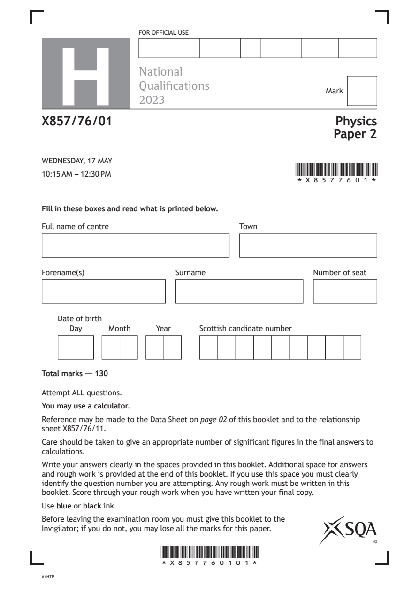
Selectable page text
FOR OFFICIAL USE
H
National
Qualications
Mark
2023
X857/76/01 Physics
Paper 2
WEDNESDAY, 17 MAY
10:15 AM – 12:30 PM
*X8577601*
Fill in these boxes and read what is printed below.
Full name of centre Town
Forename(s) Surname Number of seat
Date of birth
Day Month Year Scottish candidate number
Total marks — 130
Attempt ALL questions.
You may use a calculator.
Reference may be made to the Data Sheet on page 02 of this booklet and to the relationship
sheet X857/76/11.
Care should be taken to give an appropriate number of significant figures in the final answers to
calculations.
Write your answers clearly in the spaces provided in this booklet. Additional space for answers
and rough work is provided at the end of this booklet. If you use this space you must clearly
identify the question number you are attempting. Any rough work must be written in this
booklet. Score through your rough work when you have written your final copy.
Use blue or black ink.
Before leaving the examination room you must give this booklet to the
Invigilator; if you do not, you may lose all the marks for this paper.
©
*X857760101*
A/HTPPDF page 2
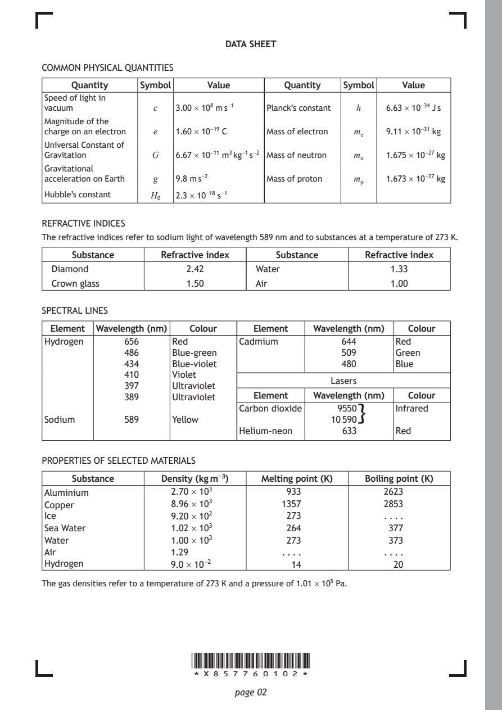
Selectable page text
DATA SHEET
COMMON PHYSICAL QUANTITIES
Quantity Symbol Value Quantity Symbol Value
Speed of light in
vacuum c 3.00 × 10⁸ m s⁻¹ Planck’s constant h 6.63 × 10⁻³⁴ J s
Magnitude of the
charge on an electron e 1.60 × 10⁻¹⁹ C Mass of electron mₑ 9.11 × 10⁻³¹ kg
Universal Constant of
Gravitation G 6.67 × 10⁻¹¹ m³ kg⁻¹ s⁻² Mass of neutron mₙ 1.675 × 10⁻²⁷ kg
Gravitational
acceleration on Earth g 9.8 m s⁻² Mass of proton mₚ 1.673 × 10⁻²⁷ kg
Hubble’s constant H₀ 2.3 × 10⁻¹⁸ s⁻¹
REFRACTIVE INDICES
The refractive indices refer to sodium light of wavelength 589 nm and to substances at a temperature of 273 K.
Substance Refractive index Substance Refractive index
Diamond 2.42 Water 1.33
Crown glass 1.50 Air 1.00
SPECTRAL LINES
Element Wavelength (nm) Colour Element Wavelength (nm) Colour
Hydrogen 656 Red Cadmium 644 Red
486 Blue-green 509 Green
434 Blue-violet 480 Blue
410 Violet
Lasers
397 Ultraviolet
389 Ultraviolet Element Wavelength (nm) Colour
Carbon dioxide 9550} Infrared
Sodium 589 Yellow 10 590
Helium-neon 633 Red
PROPERTIES OF SELECTED MATERIALS
Substance Density (kg m⁻³) Melting point (K) Boiling point (K)
Aluminium 2.70 × 10³ 933 2623
Copper 8.96 × 10³ 1357 2853
Ice 9.20 × 10² 273 . . . .
Sea Water 1.02 × 10³ 264 377
Water 1.00 × 10³ 273 373
Air 1.29 . . . . . . . .
Hydrogen 9.0 × 10⁻² 14 20
The gas densities refer to a temperature of 273 K and a pressure of 1.01 × 10⁵ Pa.
*X857760102*
page 02PDF page 3

Selectable page text
[Turn over for next question
DO NOT WRITE ON THIS PAGE
*X857760103*
page 03PDF page 4
Paper 2, Question 1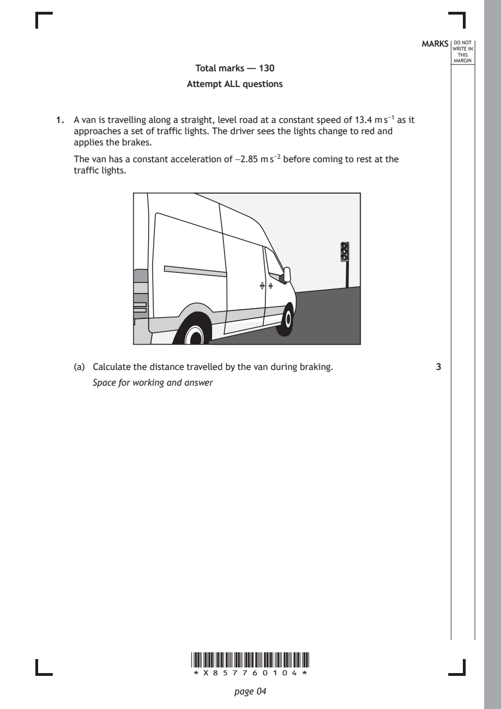
Selectable page text
MARKS _{W}^{D}_{R}^{O}_{I} _{T}^{N}OT
E IN
THIS
MARGIN
Total marks — 130
Attempt ALL questions
1. A van is travelling along a straight, level road at a constant speed of 13.4 m s⁻¹ as it
approaches a set of traffic lights. The driver sees the lights change to red and
applies the brakes.
The van has a constant acceleration of −2.85 m s⁻² before coming to rest at the
traffic lights.
(a) Calculate the distance travelled by the van during braking. 3
Space for working and answer
*X857760104*
page 04PDF page 5
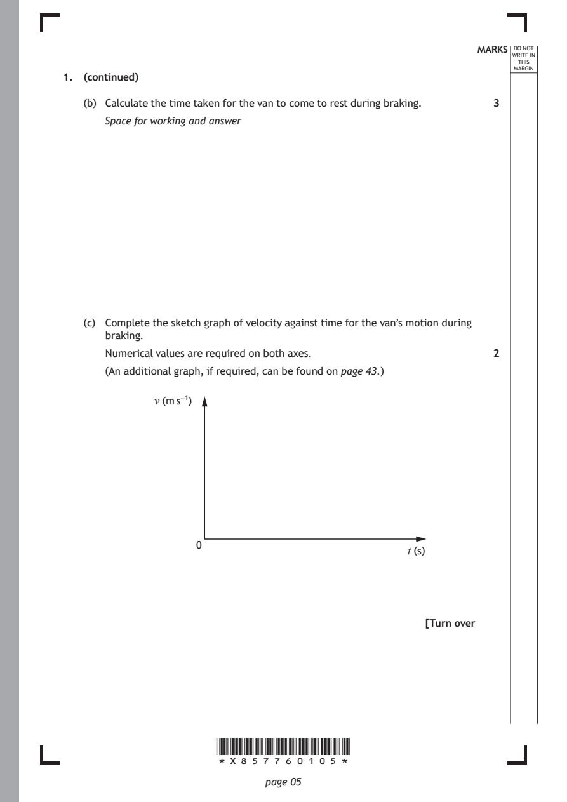
Selectable page text
MARKS _{W}^{D}_{R}^{O}_{I} _{T}^{N}OT
E IN
THIS
MARGIN
1. (continued)
(b) Calculate the time taken for the van to come to rest during braking. 3
Space for working and answer
(c) Complete the sketch graph of velocity against time for the van’s motion during
braking.
Numerical values are required on both axes. 2
(An additional graph, if required, can be found on page 43.)
v (m s⁻¹)
0
t (s)
[Turn over
*X857760105*
page 05PDF page 6
Paper 2, Question 2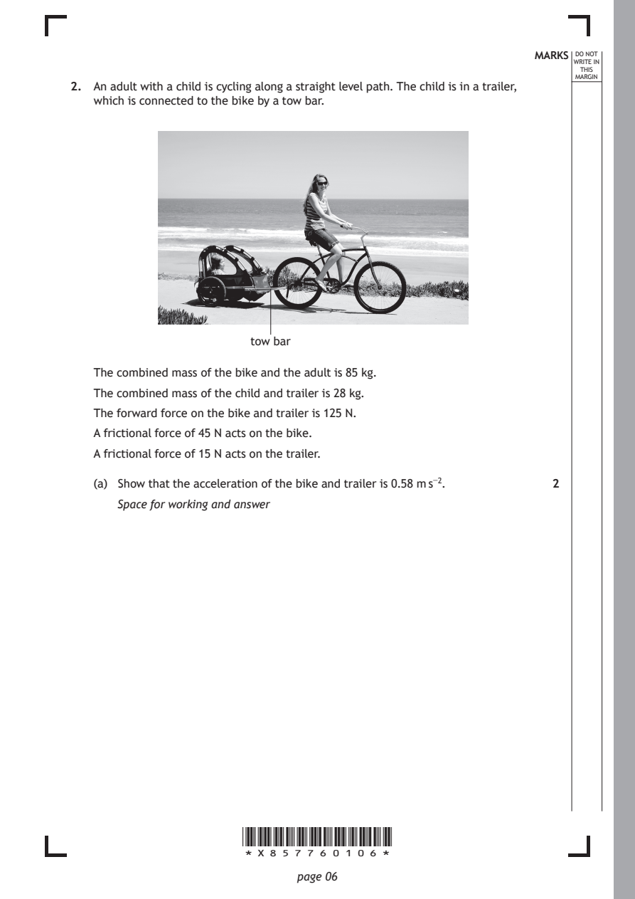
Selectable page text
MARKS _{W}^{D}_{R}^{O}_{I} _{T}^{N}OT
E IN
THIS
MARGIN
2. An adult with a child is cycling along a straight level path. The child is in a trailer,
which is connected to the bike by a tow bar.
tow bar
The combined mass of the bike and the adult is 85 kg.
The combined mass of the child and trailer is 28 kg.
The forward force on the bike and trailer is 125 N.
A frictional force of 45 N acts on the bike.
A frictional force of 15 N acts on the trailer.
(a) Show that the acceleration of the bike and trailer is 0.58 m s⁻². 2
Space for working and answer
*X857760106*
page 06PDF page 7
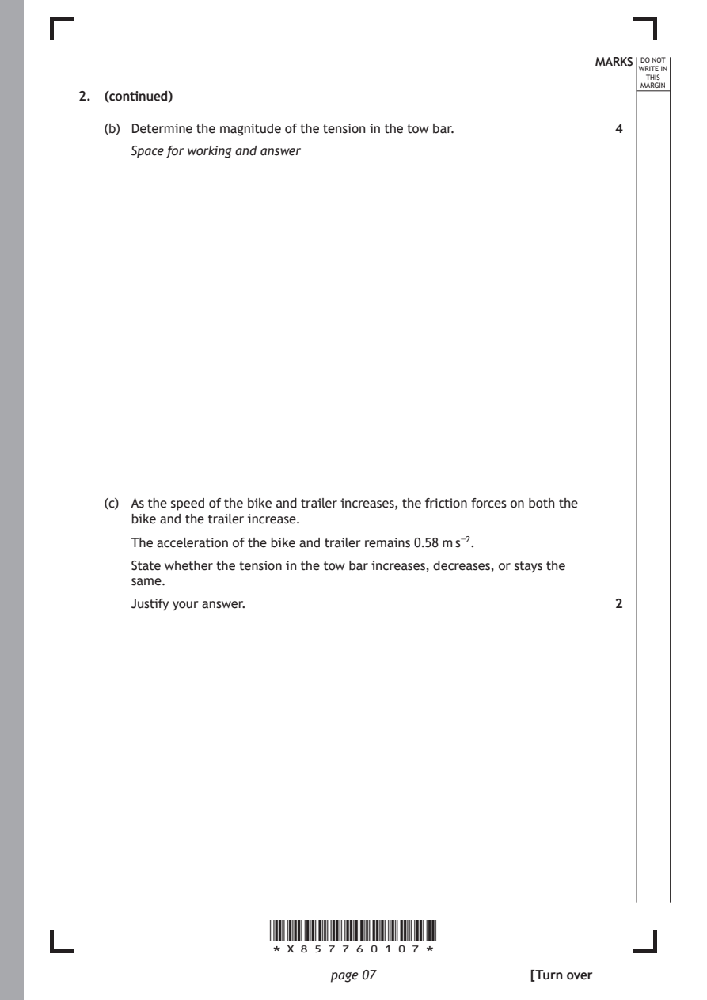
Selectable page text
MARKS _{W}^{D}_{R}^{O}_{I} _{T}^{N}OT
E IN
THIS
MARGIN
2. (continued)
(b) Determine the magnitude of the tension in the tow bar. 4
Space for working and answer
(c) As the speed of the bike and trailer increases, the friction forces on both the
bike and the trailer increase.
The acceleration of the bike and trailer remains 0.58 m s⁻².
State whether the tension in the tow bar increases, decreases, or stays the
same.
Justify your answer. 2
*X857760107*
page 07 [Turn overPDF page 8
Paper 2, Question 3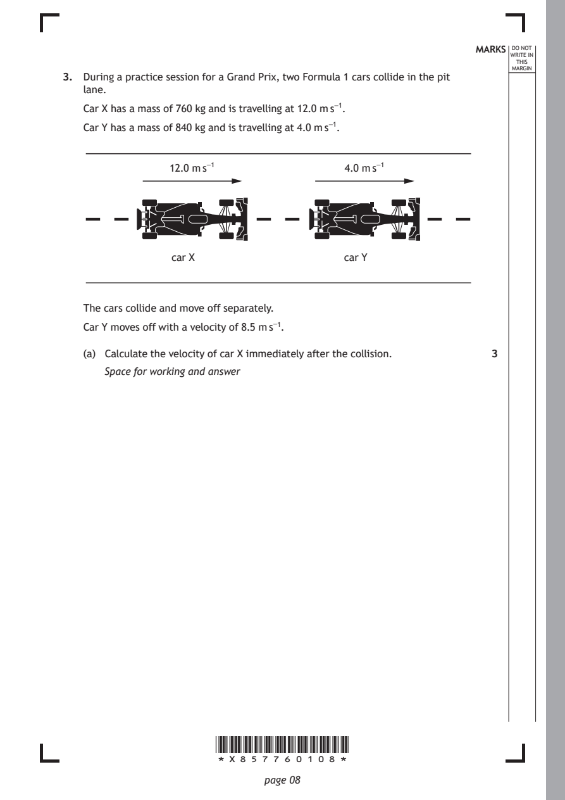
Selectable page text
MARKS _{W}^{D}_{R}^{O}_{I} _{T}^{N}OT
E IN
THIS
MARGIN
3. During a practice session for a Grand Prix, two Formula 1 cars collide in the pit
lane.
Car X has a mass of 760 kg and is travelling at 12.0 m s⁻¹.
Car Y has a mass of 840 kg and is travelling at 4.0 m s⁻¹.
12.0 m s⁻¹ 4.0 m s⁻¹
car X car Y
The cars collide and move off separately.
Car Y moves off with a velocity of 8.5 m s⁻¹.
(a) Calculate the velocity of car X immediately after the collision. 3
Space for working and answer
*X857760108*
page 08PDF page 9
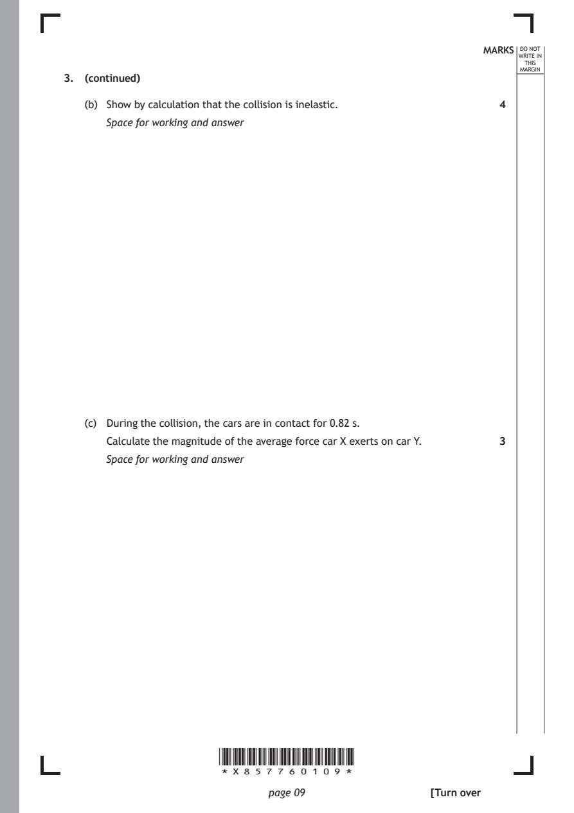
Selectable page text
MARKS _{W}^{D}_{R}^{O}_{I} _{T}^{N}OT
E IN
THIS
MARGIN
3. (continued)
(b) Show by calculation that the collision is inelastic. 4
Space for working and answer
(c) During the collision, the cars are in contact for 0.82 s.
Calculate the magnitude of the average force car X exerts on car Y. 3
Space for working and answer
*X857760109*
page 09 [Turn overPDF page 10
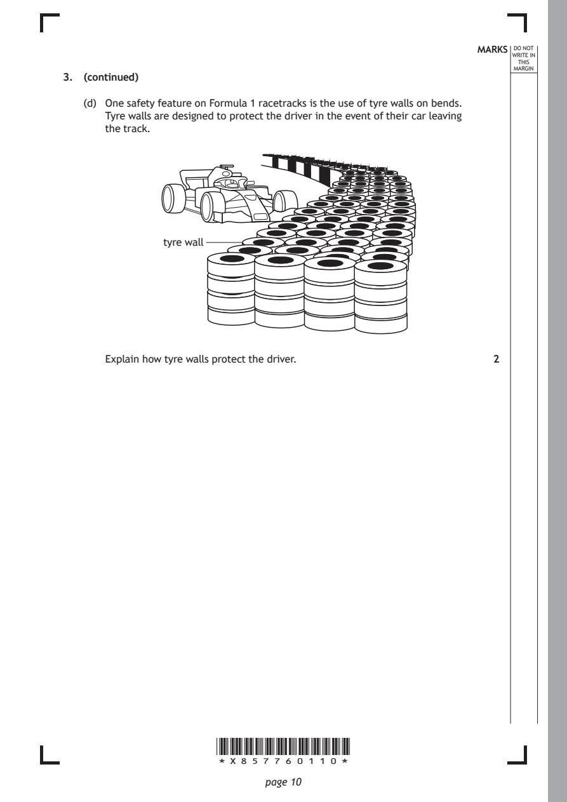
Selectable page text
MARKS _{W}^{D}_{R}^{O}_{I} _{T}^{N}OT
E IN
THIS
MARGIN
3. (continued)
(d) One safety feature on Formula 1 racetracks is the use of tyre walls on bends.
Tyre walls are designed to protect the driver in the event of their car leaving
the track.
tyre wall
Explain how tyre walls protect the driver. 2
*X857760110*
page 10PDF page 11

Selectable page text
[Turn over for next question
DO NOT WRITE ON THIS PAGE
*X857760111*
page 11PDF page 12
Paper 2, Question 4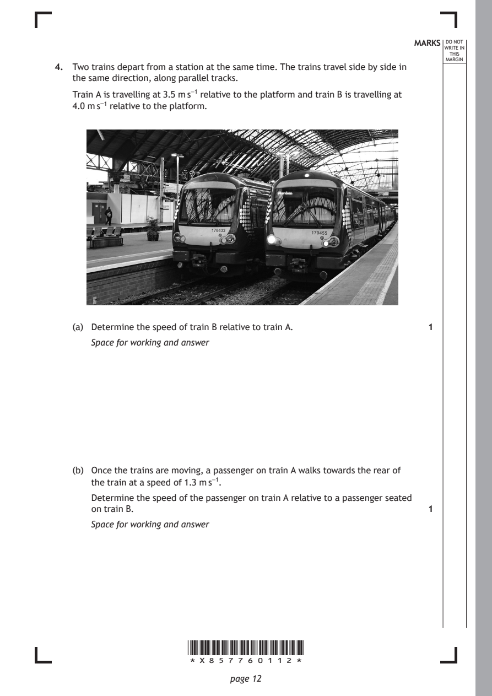
Selectable page text
MARKS _{W}^{D}_{R}^{O}_{I} _{T}^{N}OT
E IN
THIS
MARGIN
4. Two trains depart from a station at the same time. The trains travel side by side in
the same direction, along parallel tracks.
Train A is travelling at 3.5 m s⁻¹ relative to the platform and train B is travelling at
4.0 m s⁻¹ relative to the platform.
(a) Determine the speed of train B relative to train A. 1
Space for working and answer
(b) Once the trains are moving, a passenger on train A walks towards the rear of
the train at a speed of 1.3 m s⁻¹.
Determine the speed of the passenger on train A relative to a passenger seated
on train B. 1
Space for working and answer
*X857760112*
page 12PDF page 13
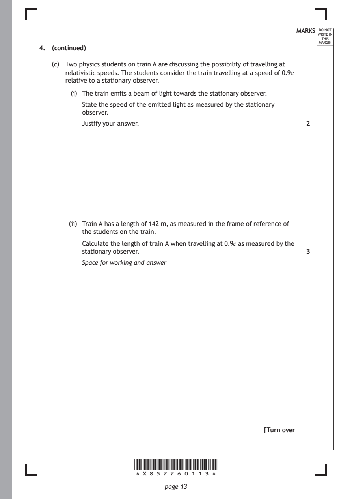
Selectable page text
MARKS _{W}^{D}_{R}^{O}_{I} _{T}^{N}OT
E IN
THIS
MARGIN
4. (continued)
(c) Two physics students on train A are discussing the possibility of travelling at
relativistic speeds. The students consider the train travelling at a speed of 0.9c
relative to a stationary observer.
(i) The train emits a beam of light towards the stationary observer.
State the speed of the emitted light as measured by the stationary
observer.
Justify your answer. 2
(ii) Train A has a length of 142 m, as measured in the frame of reference of
the students on the train.
Calculate the length of train A when travelling at 0.9c as measured by the
stationary observer. 3
Space for working and answer
[Turn over
*X857760113*
page 13PDF page 14

Selectable page text
[BLANK PAGE]
DO NOT WRITE ON THIS PAGE
*X857760114*
page 14PDF page 15
Paper 2, Question 5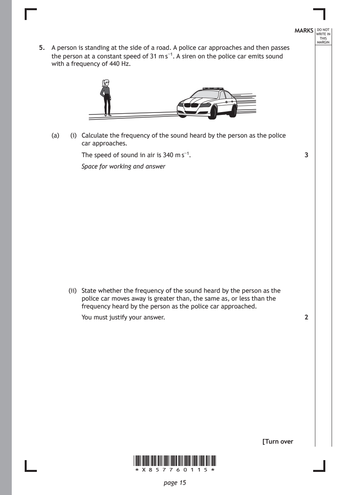
Selectable page text
MARKS _{W}^{D}_{R}^{O}_{I} _{T}^{N}OT
E IN
THIS
MARGIN
5. A person is standing at the side of a road. A police car approaches and then passes
the person at a constant speed of 31 m s⁻¹. A siren on the police car emits sound
with a frequency of 440 Hz.
(a) (i) Calculate the frequency of the sound heard by the person as the police
car approaches.
The speed of sound in air is 340 m s⁻¹. 3
Space for working and answer
(ii) State whether the frequency of the sound heard by the person as the
police car moves away is greater than, the same as, or less than the
frequency heard by the person as the police car approached.
You must justify your answer. 2
[Turn over
*X857760115*
page 15PDF page 16
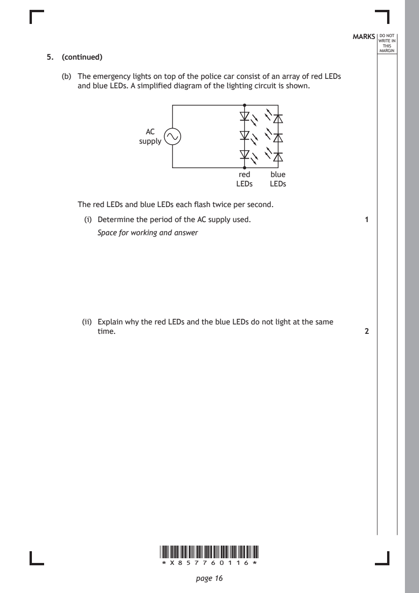
Selectable page text
MARKS _{W}^{D}_{R}^{O}_{I} _{T}^{N}OT
E IN
THIS
MARGIN
5. (continued)
(b) The emergency lights on top of the police car consist of an array of red LEDs
and blue LEDs. A simplified diagram of the lighting circuit is shown.
AC
supply
red blue
LEDs LEDs
The red LEDs and blue LEDs each flash twice per second.
(i) Determine the period of the AC supply used. 1
Space for working and answer
(ii) Explain why the red LEDs and the blue LEDs do not light at the same
time. 2
*X857760116*
page 16PDF page 17
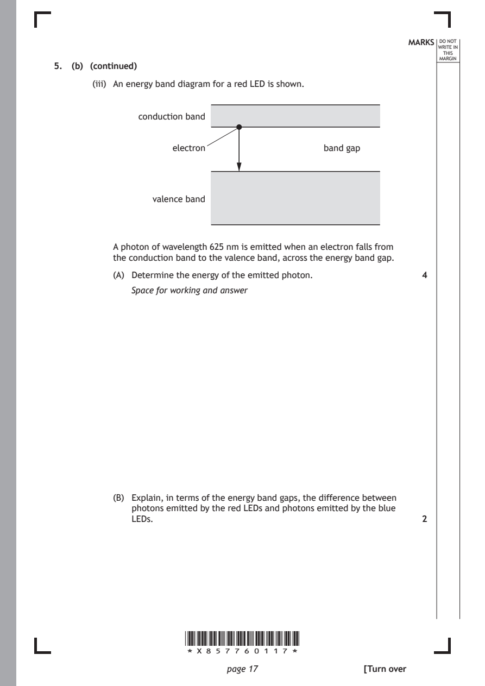
Selectable page text
MARKS _{W}^{D}_{R}^{O}_{I} _{T}^{N}OT
E IN
THIS
MARGIN
5. (b) (continued)
(iii) An energy band diagram for a red LED is shown.
conduction band
electron band gap
valence band
A photon of wavelength 625 nm is emitted when an electron falls from
the conduction band to the valence band, across the energy band gap.
(A) Determine the energy of the emitted photon. 4
Space for working and answer
(B) Explain, in terms of the energy band gaps, the difference between
photons emitted by the red LEDs and photons emitted by the blue
LEDs. 2
*X857760117*
page 17 [Turn overPDF page 18
Paper 2, Question 6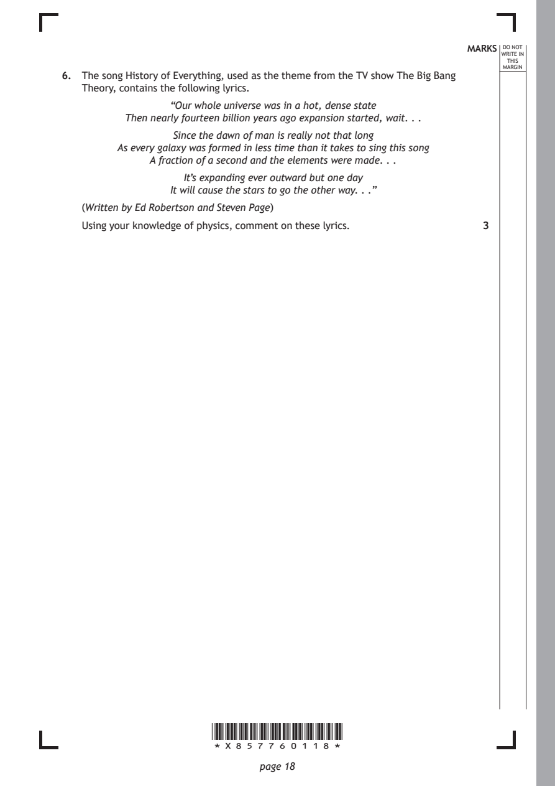
Selectable page text
MARKS _{W}^{D}_{R}^{O}_{I} _{T}^{N}OT
E IN
THIS
MARGIN
6. The song History of Everything, used as the theme from the TV show The Big Bang
Theory, contains the following lyrics.
“Our whole universe was in a hot, dense state
Then nearly fourteen billion years ago expansion started, wait. . .
Since the dawn of man is really not that long
As every galaxy was formed in less time than it takes to sing this song
A fraction of a second and the elements were made. . .
It’s expanding ever outward but one day
It will cause the stars to go the other way. . .”
(Written by Ed Robertson and Steven Page)
Using your knowledge of physics, comment on these lyrics. 3
*X857760118*
page 18PDF page 19
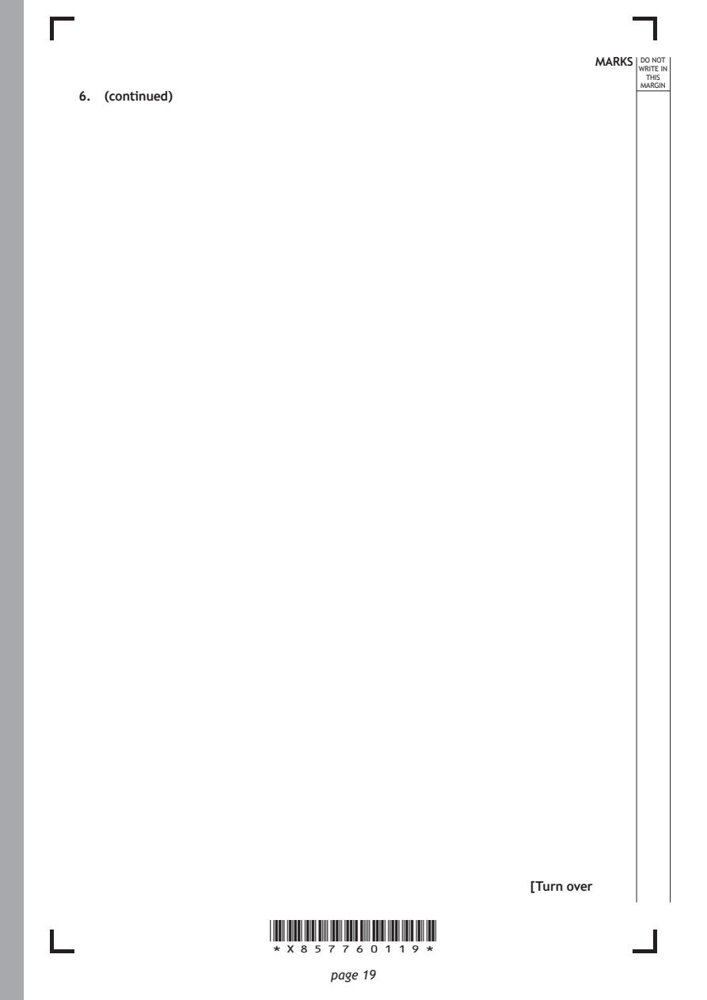
Selectable page text
MARKS _{W}^{D}_{R}^{O}_{I} _{T}^{N}OT
E IN
THIS
MARGIN
6. (continued)
[Turn over
*X857760119*
page 19PDF page 20
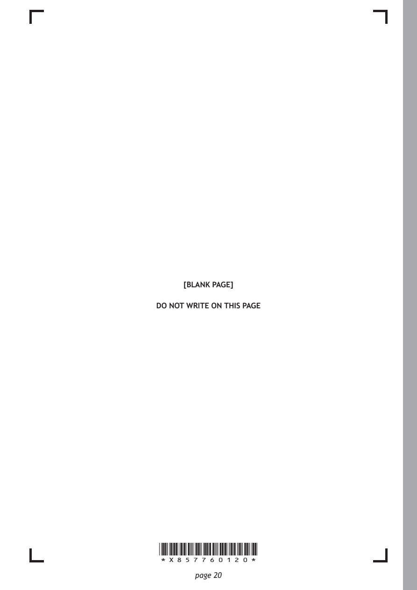
Selectable page text
[BLANK PAGE]
DO NOT WRITE ON THIS PAGE
*X857760120*
page 20PDF page 21
Paper 2, Question 7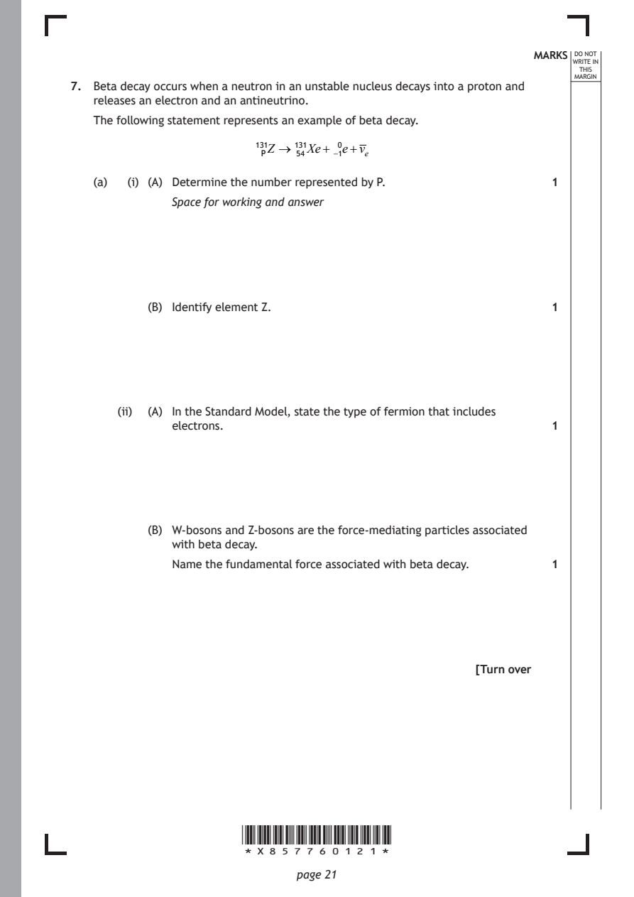
Selectable page text
MARKS _{W}^{D}_{R}^{O}_{I} _{T}^{N}OT
E IN
THIS
MARGIN
7. Beta decay occurs when a neutron in an unstable nucleus decays into a proton and
releases an electron and an antineutrino.
The following statement represents an example of beta decay.
131Z → ¹31Xe+ ₋⁰₁e+νₑ
P 54
(a) (i) (A) Determine the number represented by P. 1
Space for working and answer
(B) Identify element Z. 1
(ii) (A) In the Standard Model, state the type of fermion that includes
electrons. 1
(B) W-bosons and Z-bosons are the force-mediating particles associated
with beta decay.
Name the fundamental force associated with beta decay. 1
[Turn over
*X857760121*
page 21PDF page 22
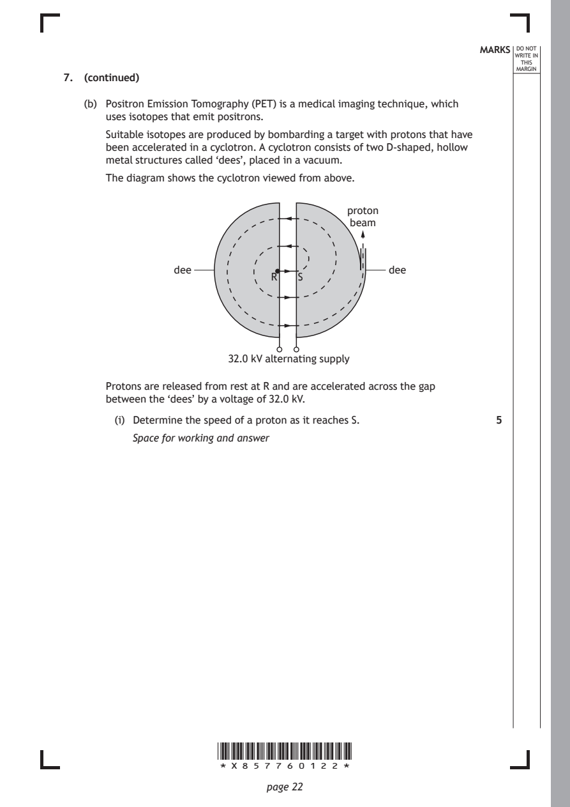
Selectable page text
MARKS _{W}^{D}_{R}^{O}_{I} _{T}^{N}OT
E IN
THIS
MARGIN
7. (continued)
(b) Positron Emission Tomography (PET) is a medical imaging technique, which
uses isotopes that emit positrons.
Suitable isotopes are produced by bombarding a target with protons that have
been accelerated in a cyclotron. A cyclotron consists of two D-shaped, hollow
metal structures called ‘dees’, placed in a vacuum.
The diagram shows the cyclotron viewed from above.
proton
beam
dee dee
R S
32.0 kV alternating supply
Protons are released from rest at R and are accelerated across the gap
between the ‘dees’ by a voltage of 32.0 kV.
(i) Determine the speed of a proton as it reaches S. 5
Space for working and answer
*X857760122*
page 22PDF page 23
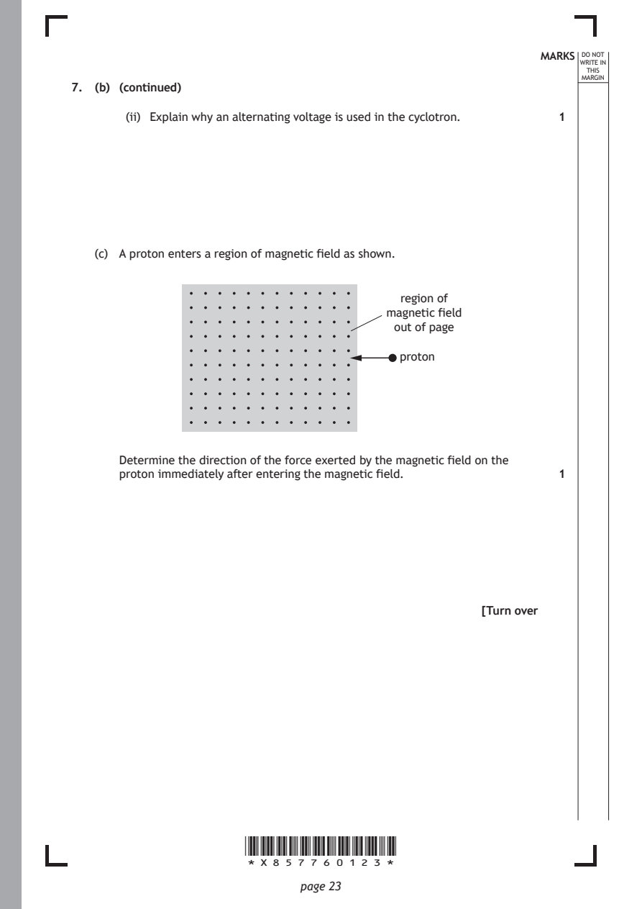
Selectable page text
MARKS _{W}^{D}_{R}^{O}_{I} _{T}^{N}OT
E IN
THIS
MARGIN
7. (b) (continued)
(ii) Explain why an alternating voltage is used in the cyclotron. 1
(c) A proton enters a region of magnetic field as shown.
region of
magnetic field
out of page
proton
Determine the direction of the force exerted by the magnetic field on the
proton immediately after entering the magnetic field. 1
[Turn over
*X857760123*
page 23PDF page 24
Paper 2, Question 8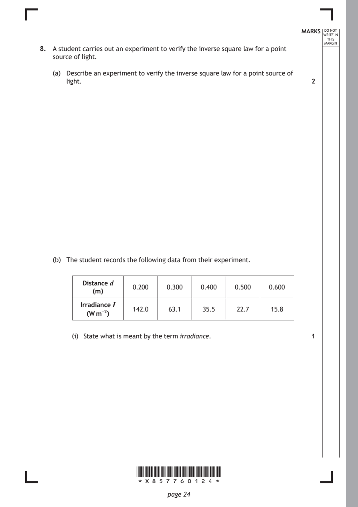
Selectable page text
MARKS _{W}^{D}_{R}^{O}_{I} _{T}^{N}OT
E IN
THIS
MARGIN
8. A student carries out an experiment to verify the inverse square law for a point
source of light.
(a) Describe an experiment to verify the inverse square law for a point source of
light. 2
(b) The student records the following data from their experiment.
Distance d
0.200 0.300 0.400 0.500 0.600
(m)
Irradiance I
142.0 63.1 35.5 22.7 15.8
(W m⁻²)
(i) State what is meant by the term irradiance. 1
*X857760124*
page 24PDF page 25
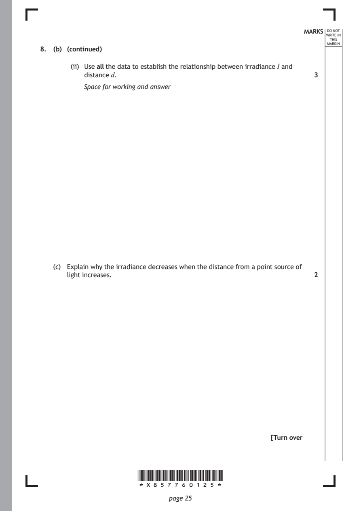
Selectable page text
MARKS _{W}^{D}_{R}^{O}_{I} _{T}^{N}OT
E IN
THIS
MARGIN
8. (b) (continued)
(ii) Use all the data to establish the relationship between irradiance I and
distance d. 3
Space for working and answer
(c) Explain why the irradiance decreases when the distance from a point source of
light increases. 2
[Turn over
*X857760125*
page 25PDF page 26
Paper 2, Question 9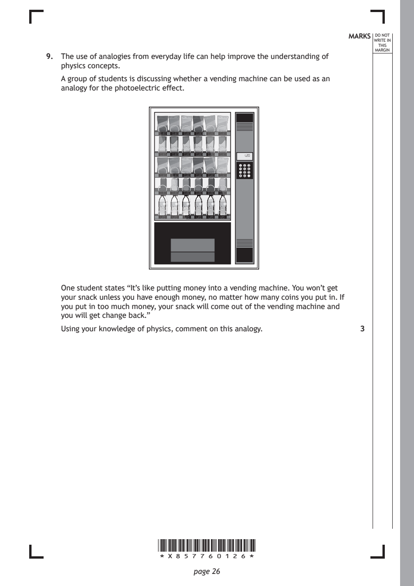
Selectable page text
MARKS _{W}^{D}_{R}^{O}_{I} _{T}^{N}OT
E IN
THIS
MARGIN
9. The use of analogies from everyday life can help improve the understanding of
physics concepts.
A group of students is discussing whether a vending machine can be used as an
analogy for the photoelectric effect.
One student states “It’s like putting money into a vending machine. You won’t get
your snack unless you have enough money, no matter how many coins you put in. If
you put in too much money, your snack will come out of the vending machine and
you will get change back.”
Using your knowledge of physics, comment on this analogy. 3
*X857760126*
page 26PDF page 27
Selectable page text
MARKS _{W}^{D}_{R}^{O}_{I} _{T}^{N}OT
E IN
THIS
MARGIN
9. (continued)
[Turn over
*X857760127*
page 27PDF page 28
Paper 2, Question 10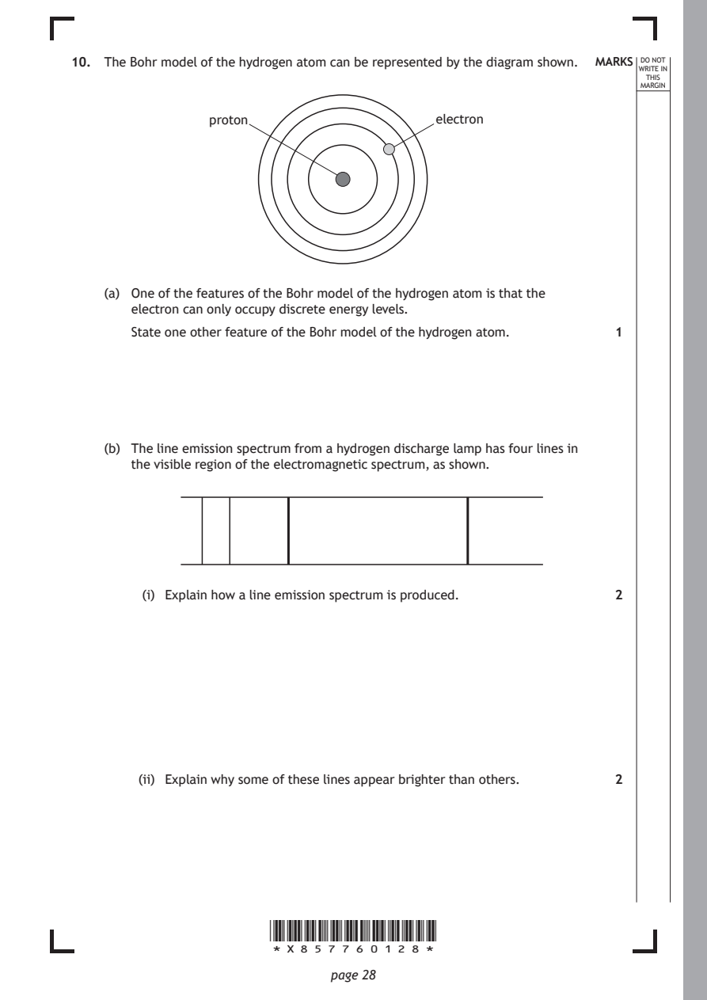
Selectable page text
10. The Bohr model of the hydrogen atom can be represented by the diagram shown. MARKS _{W}^{D}_{R}^{O}_{I} _{T}^{N}OT
E IN
THIS
MARGIN
proton electron
(a) One of the features of the Bohr model of the hydrogen atom is that the
electron can only occupy discrete energy levels.
State one other feature of the Bohr model of the hydrogen atom. 1
(b) The line emission spectrum from a hydrogen discharge lamp has four lines in
the visible region of the electromagnetic spectrum, as shown.
(i) Explain how a line emission spectrum is produced. 2
(ii) Explain why some of these lines appear brighter than others. 2
*X857760128*
page 28PDF page 29
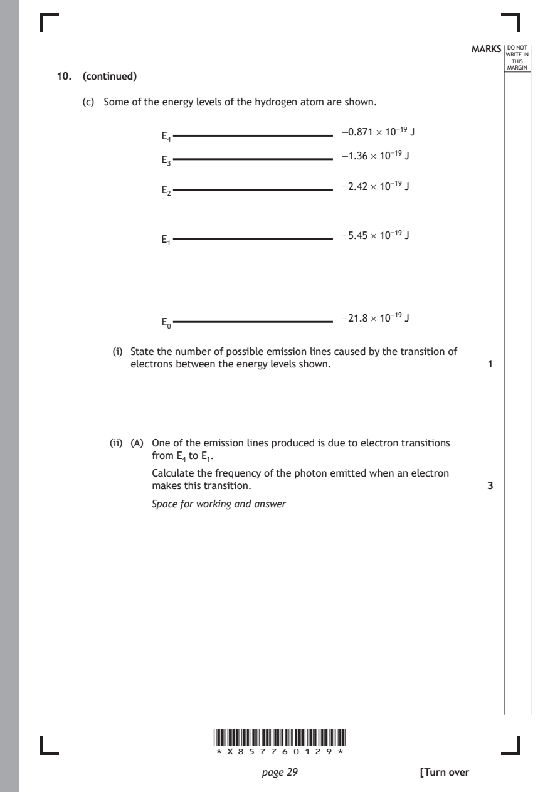
Selectable page text
MARKS _{W}^{D}_{R}^{O}_{I} _{T}^{N}OT
E IN
THIS
MARGIN
10. (continued)
(c) Some of the energy levels of the hydrogen atom are shown.
−0.871 × 10⁻¹⁹ J
E₄
−1.36 × 10⁻¹⁹ J
E₃
−2.42 × 10⁻¹⁹ J
E₂
−5.45 × 10⁻¹⁹ J
E₁
−21.8 × 10⁻¹⁹ J
E₀
(i) State the number of possible emission lines caused by the transition of
electrons between the energy levels shown. 1
(ii) (A) One of the emission lines produced is due to electron transitions
from E₄ to E₁.
Calculate the frequency of the photon emitted when an electron
makes this transition. 3
Space for working and answer
*X857760129*
page 29 [Turn overPDF page 30
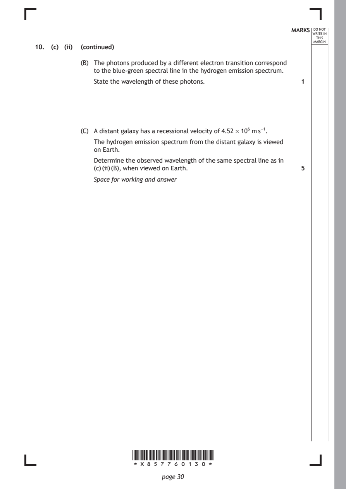
Selectable page text
MARKS _{W}^{D}_{R}^{O}_{I} _{T}^{N}OT
E IN
THIS
MARGIN
10. (c) (ii) (continued)
(B) The photons produced by a different electron transition correspond
to the blue-green spectral line in the hydrogen emission spectrum.
State the wavelength of these photons. 1
(C) A distant galaxy has a recessional velocity of 4.52 × 10⁶ m s⁻¹.
The hydrogen emission spectrum from the distant galaxy is viewed
on Earth.
Determine the observed wavelength of the same spectral line as in
(c) (ii) (B), when viewed on Earth. 5
Space for working and answer
*X857760130*
page 30PDF page 31
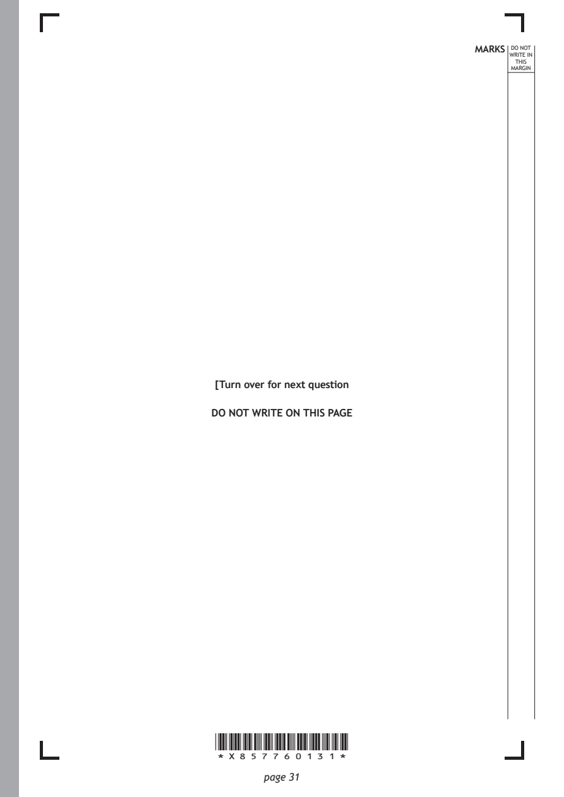
Selectable page text
MARKS _{W}^{D}_{R}^{O}_{I} _{T}^{N}OT
E IN
THIS
MARGIN
[Turn over for next question
DO NOT WRITE ON THIS PAGE
*X857760131*
page 31PDF page 32
Paper 2, Question 11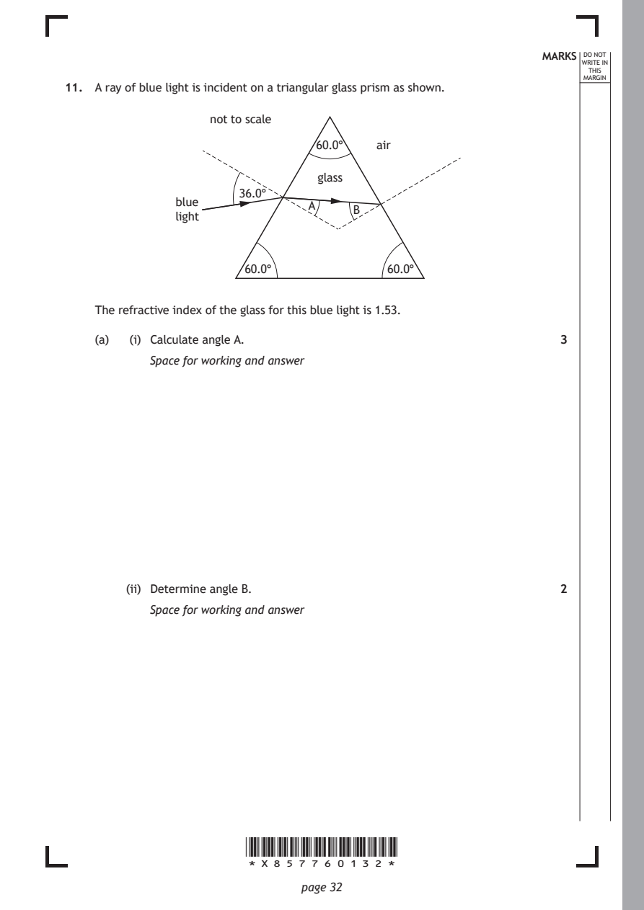
Selectable page text
MARKS _{W}^{D}_{R}^{O}_{I} _{T}^{N}OT
E IN
THIS
MARGIN
11. A ray of blue light is incident on a triangular glass prism as shown.
not to scale
60.0° air
glass
36.0°
blue
A
B
light
60.0° 60.0°
The refractive index of the glass for this blue light is 1.53.
(a) (i) Calculate angle A. 3
Space for working and answer
(ii) Determine angle B. 2
Space for working and answer
*X857760132*
page 32PDF page 33
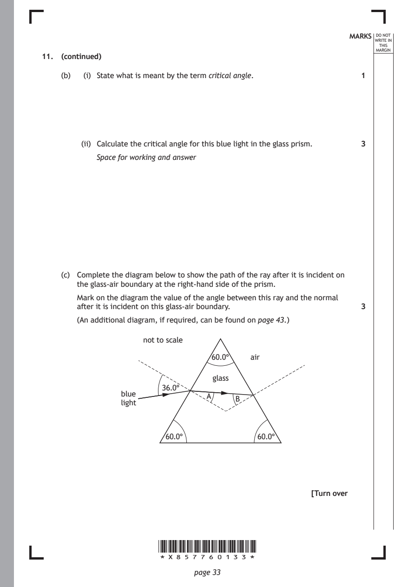
Selectable page text
MARKS _{W}^{D}_{R}^{O}_{I} _{T}^{N}OT
E IN
THIS
MARGIN
11. (continued)
(b) (i) State what is meant by the term critical angle. 1
(ii) Calculate the critical angle for this blue light in the glass prism. 3
Space for working and answer
(c) Complete the diagram below to show the path of the ray after it is incident on
the glass-air boundary at the right-hand side of the prism.
Mark on the diagram the value of the angle between this ray and the normal
after it is incident on this glass-air boundary. 3
(An additional diagram, if required, can be found on page 43.)
not to scale
60.0° air
glass
36.0°
blue
A
B
light
60.0° 60.0°
[Turn over
*X857760133*
page 33PDF page 34
Paper 2, Question 12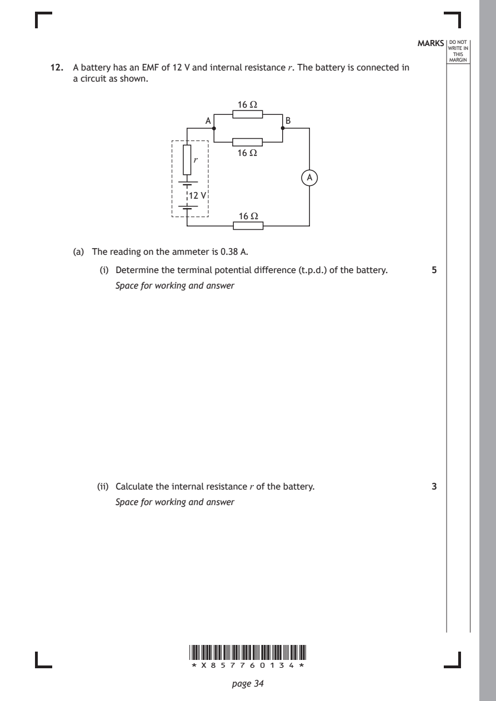
Selectable page text
MARKS _{W}^{D}_{R}^{O}_{I} _{T}^{N}OT
E IN
THIS
MARGIN
12. A battery has an EMF of 12 V and internal resistance r. The battery is connected in
a circuit as shown.
16 Ω
A B
16 Ω
r
A
12 V
16 Ω
(a) The reading on the ammeter is 0.38 A.
(i) Determine the terminal potential difference (t.p.d.) of the battery. 5
Space for working and answer
(ii) Calculate the internal resistance r of the battery. 3
Space for working and answer
*X857760134*
page 34PDF page 35
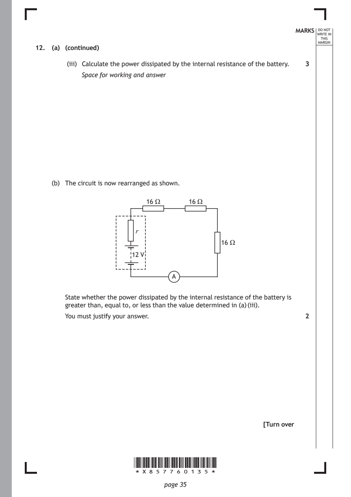
Selectable page text
MARKS _{W}^{D}_{R}^{O}_{I} _{T}^{N}OT
E IN
THIS
MARGIN
12. (a) (continued)
(iii) Calculate the power dissipated by the internal resistance of the battery. 3
Space for working and answer
(b) The circuit is now rearranged as shown.
16 Ω 16 Ω
r
16 Ω
12 V
A
State whether the power dissipated by the internal resistance of the battery is
greater than, equal to, or less than the value determined in (a) (iii).
You must justify your answer. 2
[Turn over
*X857760135*
page 35PDF page 36
Paper 2, Question 13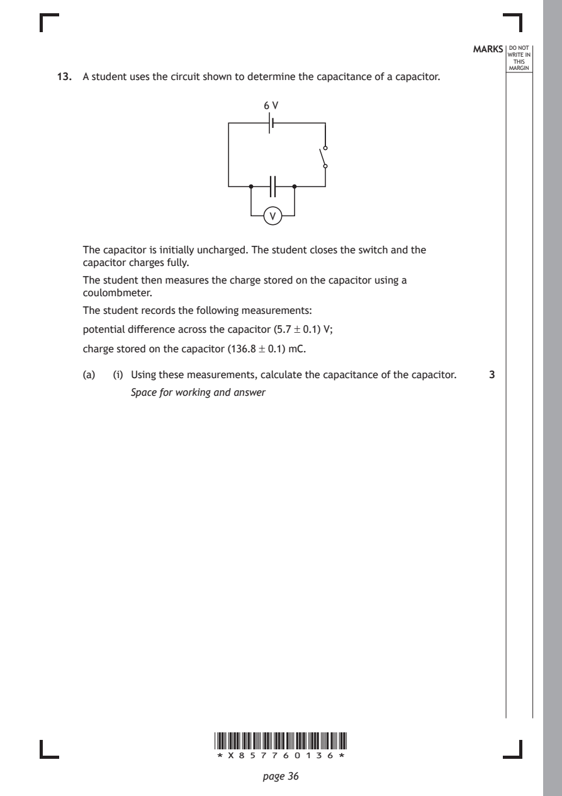
Selectable page text
MARKS _{W}^{D}_{R}^{O}_{I} _{T}^{N}OT
E IN
THIS
MARGIN
13. A student uses the circuit shown to determine the capacitance of a capacitor.
6 V
V
The capacitor is initially uncharged. The student closes the switch and the
capacitor charges fully.
The student then measures the charge stored on the capacitor using a
coulombmeter.
The student records the following measurements:
potential difference across the capacitor (5.7 ± 0.1) V;
charge stored on the capacitor (136.8 ± 0.1) mC.
(a) (i) Using these measurements, calculate the capacitance of the capacitor. 3
Space for working and answer
*X857760136*
page 36PDF page 37
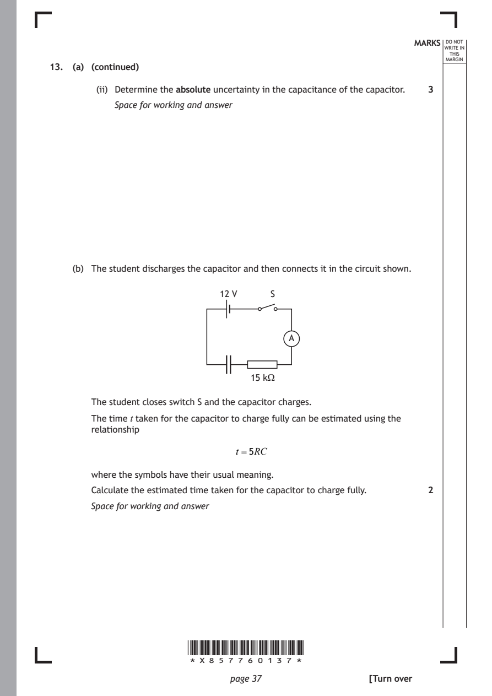
Selectable page text
MARKS _{W}^{D}_{R}^{O}_{I} _{T}^{N}OT
E IN
THIS
MARGIN
13. (a) (continued)
(ii) Determine the absolute uncertainty in the capacitance of the capacitor. 3
Space for working and answer
(b) The student discharges the capacitor and then connects it in the circuit shown.
12 V S
A
15 kΩ
The student closes switch S and the capacitor charges.
The time t taken for the capacitor to charge fully can be estimated using the
relationship
t =5RC
where the symbols have their usual meaning.
Calculate the estimated time taken for the capacitor to charge fully. 2
Space for working and answer
*X857760137*
page 37 [Turn overPDF page 38
Paper 2, Question 14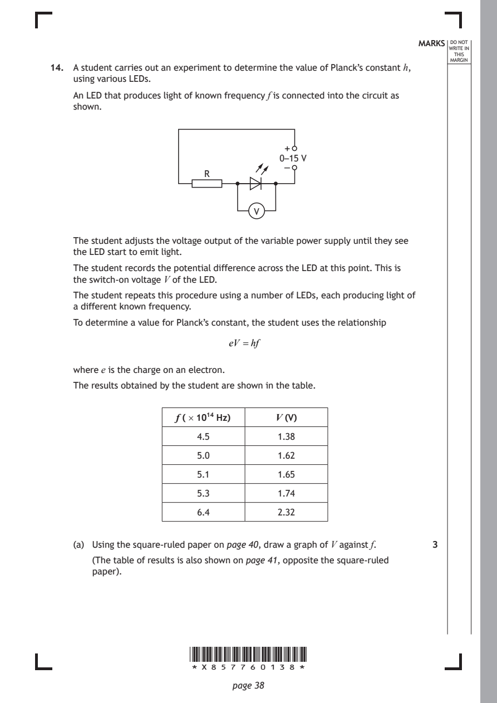
Selectable page text
MARKS _{W}^{D}_{R}^{O}_{I} _{T}^{N}OT
E IN
THIS
MARGIN
14. A student carries out an experiment to determine the value of Planck’s constant h,
using various LEDs.
An LED that produces light of known frequency f is connected into the circuit as
shown.
*X857760138*
page 38
+
–
0–15 V
R
V
The student adjusts the voltage output of the variable power supply until they see
the LED start to emit light.
The student records the potential difference across the LED at this point. This is
the switch-on voltage V of the LED.
The student repeats this procedure using a number of LEDs, each producing light of
a different known frequency.
To determine a value for Planck’s constant, the student uses the relationship
eV =hf
where e is the charge on an electron.
The results obtained by the student are shown in the table.
f ( × 10¹⁴ Hz) V (V)
4.5 1.38
5.0 1.62
5.1 1.65
5.3 1.74
6.4 2.32
(a) Using the square-ruled paper on page 40, draw a graph of V against f. 3
(The table of results is also shown on page 41, opposite the square-ruled
paper).PDF page 39
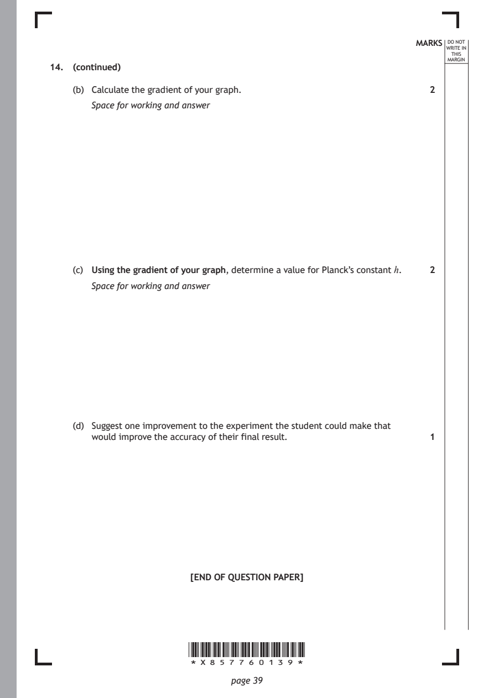
Selectable page text
MARKS _{W}^{D}_{R}^{O}_{I} _{T}^{N}OT
E IN
THIS
MARGIN
14. (continued)
(b) Calculate the gradient of your graph. 2
Space for working and answer
(c) Using the gradient of your graph, determine a value for Planck’s constant h. 2
Space for working and answer
(d) Suggest one improvement to the experiment the student could make that
would improve the accuracy of their final result. 1
[END OF QUESTION PAPER]
*X857760139*
page 39PDF page 40
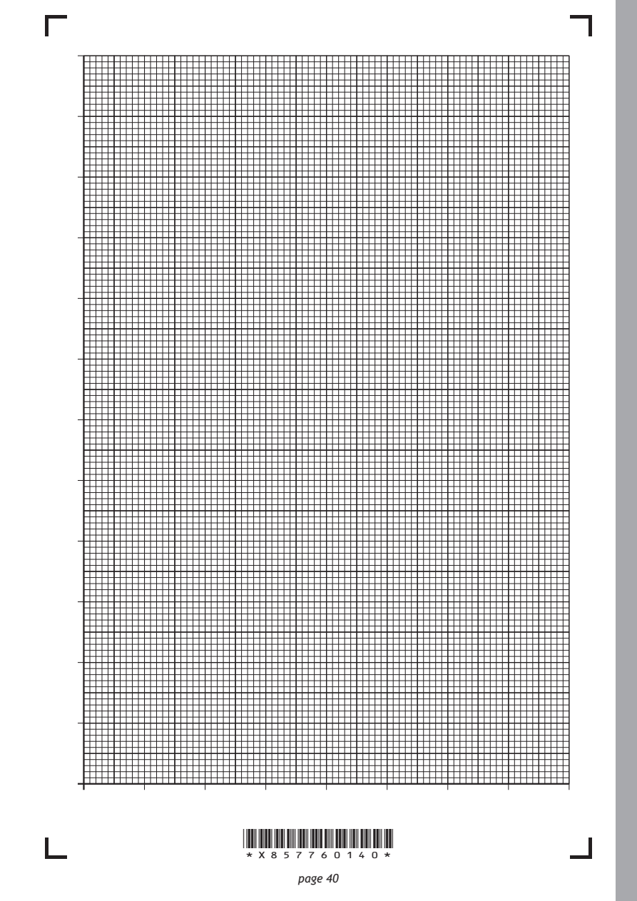
Selectable page text
*X857760140*
page 40PDF page 41
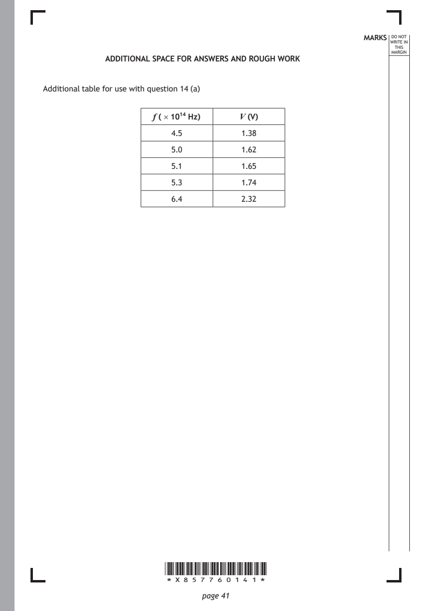
Selectable page text
MARKS _{W}^{D}_{R}^{O}_{I} _{T}^{N}OT
E IN
THIS
MARGIN
ADDITIONAL SPACE FOR ANSWERS AND ROUGH WORK
Additional table for use with question 14 (a)
f ( × 10¹⁴ Hz) V (V)
4.5 1.38
5.0 1.62
5.1 1.65
5.3 1.74
6.4 2.32
*X857760141*
page 41PDF page 42
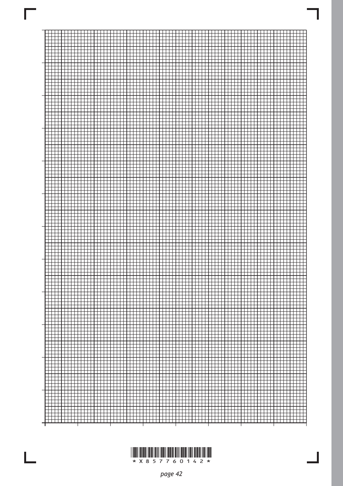
Selectable page text
*X857760142*
page 42PDF page 43
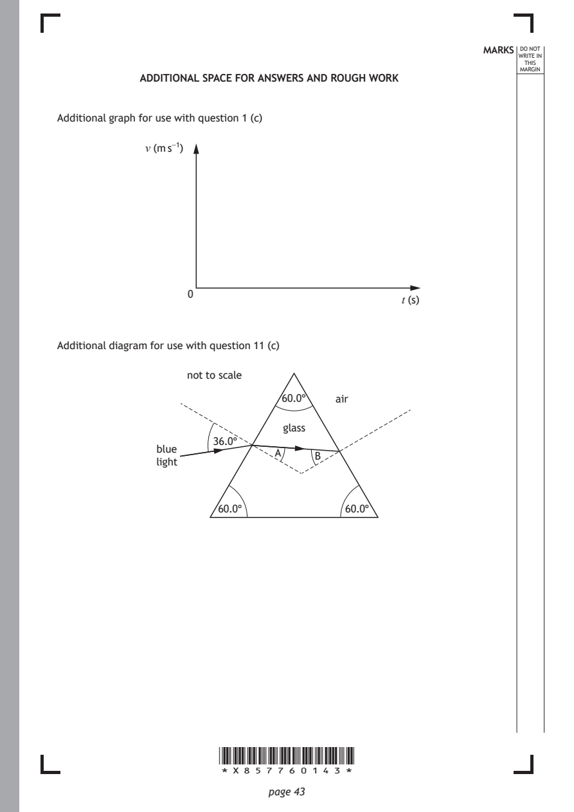
Selectable page text
MARKS _{W}^{D}_{R}^{O}_{I} _{T}^{N}OT
E IN
THIS
MARGIN
ADDITIONAL SPACE FOR ANSWERS AND ROUGH WORK
Additional graph for use with question 1 (c)
v (m s⁻¹)
0
t (s)
Additional diagram for use with question 11 (c)
not to scale
60.0° air
glass
36.0°
blue
A
B
light
60.0° 60.0°
*X857760143*
page 43PDF page 44
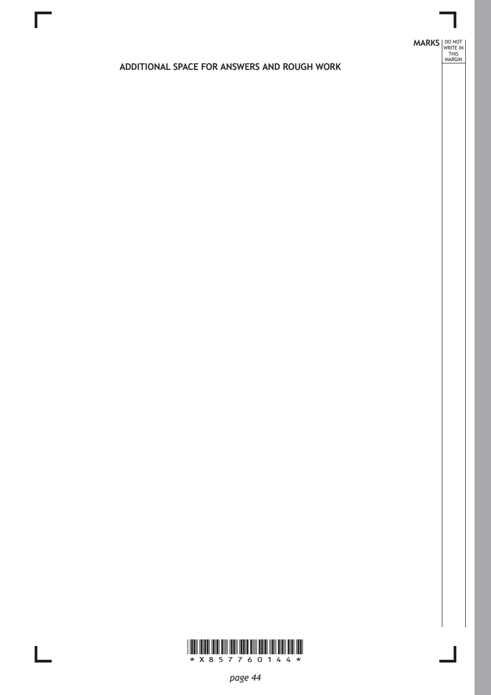
Selectable page text
MARKS _{W}^{D}_{R}^{O}_{I} _{T}^{N}OT
E IN
THIS
MARGIN
ADDITIONAL SPACE FOR ANSWERS AND ROUGH WORK
*X857760144*
page 44PDF page 45
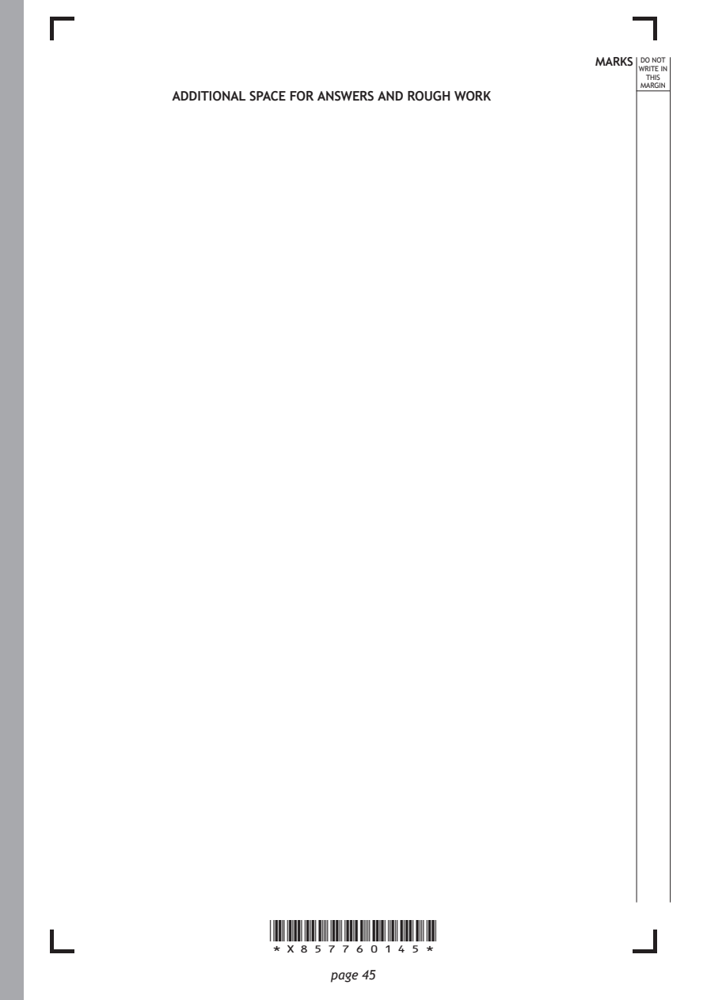
Selectable page text
MARKS _{W}^{D}_{R}^{O}_{I} _{T}^{N}OT
E IN
THIS
MARGIN
ADDITIONAL SPACE FOR ANSWERS AND ROUGH WORK
*X857760145*
page 45PDF page 46
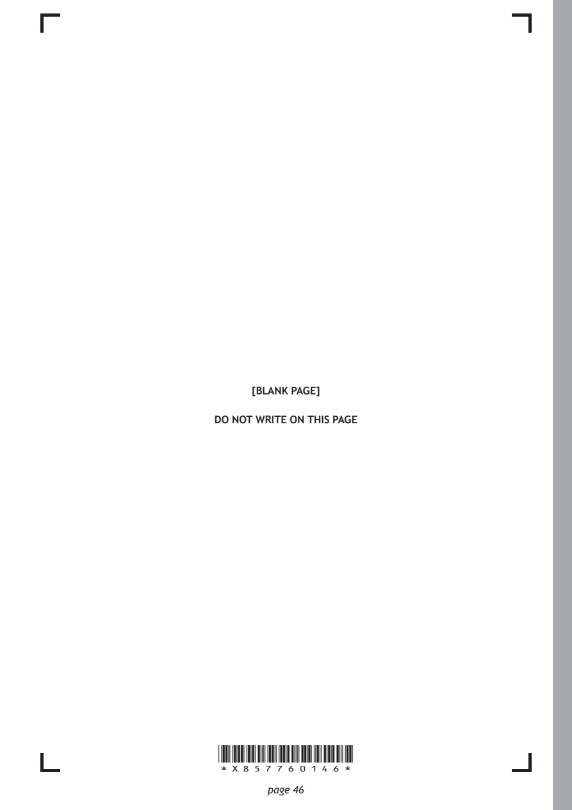
Selectable page text
[BLANK PAGE]
DO NOT WRITE ON THIS PAGE
*X857760146*
page 46PDF page 47
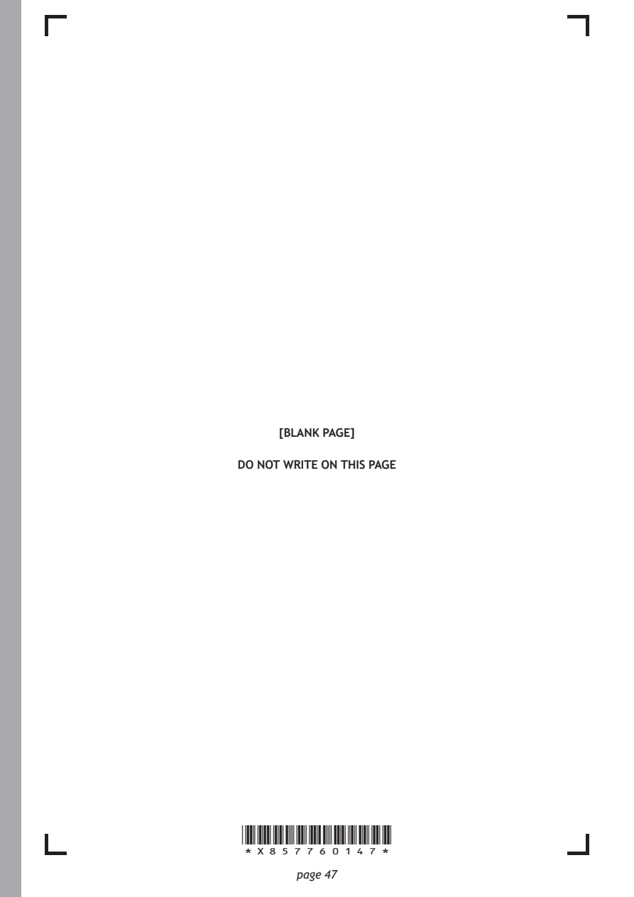
Selectable page text
[BLANK PAGE]
DO NOT WRITE ON THIS PAGE
*X857760147*
page 47PDF page 48
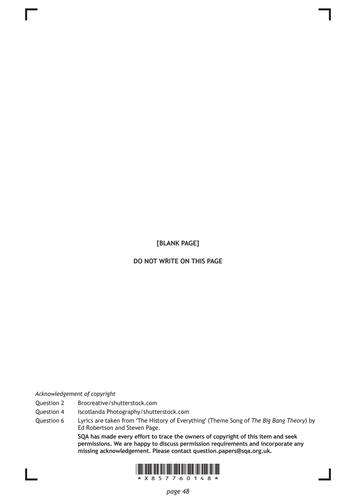
Selectable page text
[BLANK PAGE]
DO NOT WRITE ON THIS PAGE
Acknowledgement of copyright
Question 2 Brocreative/shutterstock.com
Question 4 Iscotlanda Photography/shutterstock.com
Question 6 Lyrics are taken from ‘The History of Everything’ (Theme Song of The Big Bang Theory) by
Ed Robertson and Steven Page.
SQA has made every effort to trace the owners of copyright of this item and seek
permissions. We are happy to discuss permission requirements and incorporate any
missing acknowledgement. Please contact question.papers@sqa.org.uk.
*X857760148*
page 48